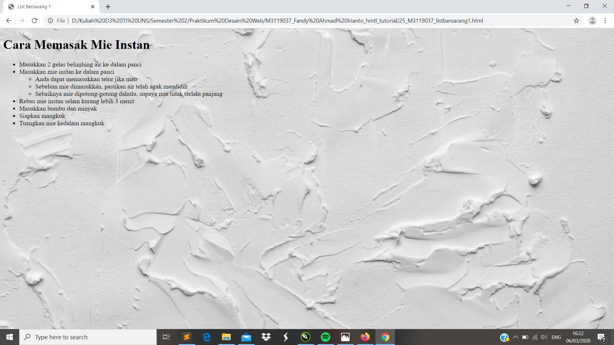

List Bersarang 1
//List Bersarang merupakan membuat daftar list didalam daftar. Untuk dapat membuat list bersarang kita perlu menggunakan tambahan <ul> dalam orderlist.
Codingan
<!DOCTYPE html>
<html>
<head>
<meta charset="UTF-8">
<title> List Bersarang 1 </title>
</head>
<body style ="background:url(background.jpg); background-repeat: no-repeat; background-size: cover;">
<h1> Cara Memasak Mie Instan </h1>
<ul>
<li> Masukkan 2 gelas belimbing air ke dalam panci </li>
<li> Masukkan mie instan ke dalam panci </li>
<ul>
<li> Anda dapat memasukkan telur jika mau </li>
<li> Sebelum mie dimasukkan, pastikan air telah agak mendidih </li>
<li> Sebaiknya mie dipotong-potong dahulu, supaya mie tidak terlalu panjang</li>
</ul>
</li>
<li> Rebus mie instan selam kurang lebih 3 menit </li>
<li> Masukkan bumbu dan minyak </li>
<li> Siapkan mangkuk </li>
<li> Tuangkan mie kedalam mangkuk</li>
</ul>
</body>
</html>
Tampilan Hasil Percobaan

Kesimpulan
Pada percobaan List Bersarang merupakan daftar list yang berada dalam daftar atau bisa disebut daftar didalam daftar. Untuk perintah yang digunakan tinggal menambahkan <ul>, kemudian tag <li> berfungsi untuk membuat list pada halaman web. Sedangkan untuk menentukan unordered list nya adalah dengan tag <ul>.